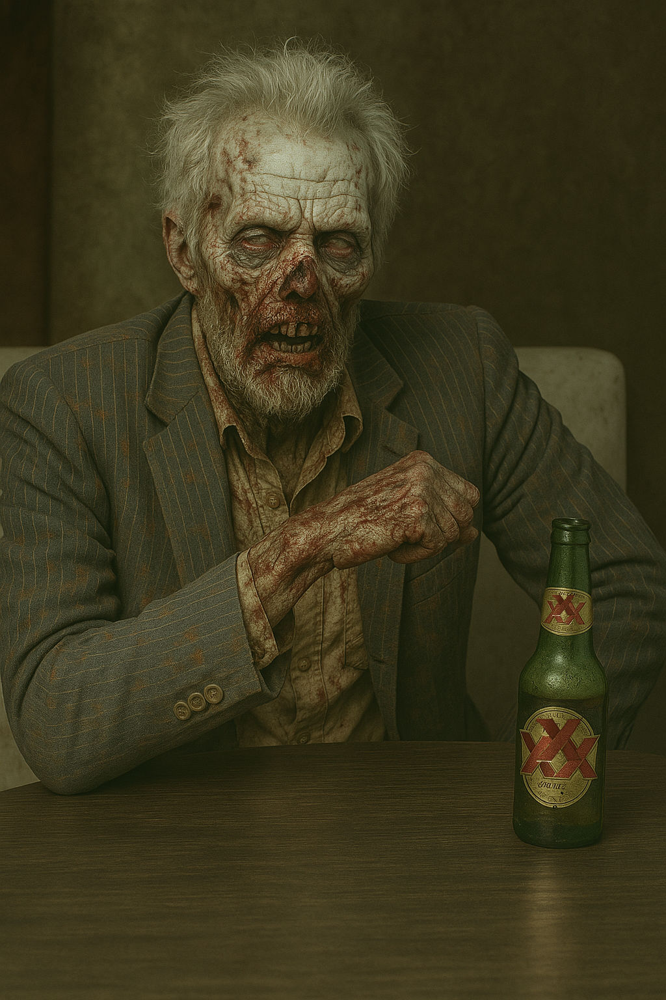

I saw a meme that said February is the final exam for wildlife, when fat reserves and food stores are at their lowest, snow is at its deepest, and temperatures are at their lowest. So I'm glad I came up with my odd little idea in late December.
I had seen videos of people creating platforms to attract and feed crows. I want to get them used to coming in the yard before nesting season (so they will nest in my pines), but it's nearly impossible to sink a post here in winter. So it was either wait until spring or come up with another idea. Of course, patience has never been my strong suit.
Around the same time, hubby cleaned out his workshop and was throwing away an old wooden high chair he had planned to restore but then decided not to.
Light bulb!
I set up the high chair and filled the tray with yummy things I thought crows would like: peanuts, corn, mealworms, etc.
It didn't quite work out as intended. The crows are still in the front yard almost daily, digging french fries and chicken skins out of the neighborhood garbage cans. But the other birds seem to like it.
As do the rabbits. Initially, the rabbits just ate whatever the birds knocked off the tray. But then one of them got smart and jumped up in the chair. I snapped this picture as her(?) friend seemed to be saying, "How the hell did you get up there?!"

The writing update
I haven't succeeded in writing every day, but I have been writing at least 2 or 3 times a week. And each time, it's been longer than the 15-minute goal I've set for myself. So I am making progress!
I'm still working on the revision of my "Exit 0" story, and I'm working on a new story for a submission call.
I also received an acceptance for one of my stories. The anthology looks really interesting, so I'm excited about reading it as well as about having a story in it!
What I'm reading
Aligning my reading with my walking goal has worked out really well. Plus, I've started reading for half an hour every night before bed. Between the two, I'm reading a ton!
I'm trying out the year-long lit challenge. This challenge involves reading a book a month on a specific theme or requirement. January's instruction was to read the first book in a series. February's is to read a book with a sports theme.
I read The Circle, by Dave Eggers, for the January lit challenge. I wasn't crazy about the main character. She's pretty unlikeable and does really dumb stuff, but it becomes apparent why she's like this as the book draws to a close.
I like it and though it was a creepy book. I think we are moving toward the excessive technological intrusions described in the story. We are already seeing folks using AI make fake memes of rivals being arrested or planes dumping crap on crowds. So the book is a timely read for this moment in history.
For the February book, I'm listening to the audiobook of Indian Horse, by Richard Wagamese. The main character is taken from his family and sent to one of the Native boarding schools. He finds some solace to get him through the abuse and misery when he falls in love with hockey.
I read Man-Made Monsters, by Andrea Rogers. I borrowed this one from the library, but don't remember why I picked it up. I really enjoyed it, though. It's a series of horror short stories that follows a Cherokee family through the generations.
I read two other borrowed books. The Hitch and Treasure Island, both by Sara Levine.
I read Treasure Island first. I moved from "Oh, this main character is quirky," to "Oh, dear. This main character has some serious mental issues," to "This main character is a psychopath."
I enjoyed The Hitch more, not just because it included a corgi but also because it was a really cute idea (a child possessed by a corgi). However, I really felt let down at the end of the book. I was more interested in the boy and the corgi, and instead, the last part of the book was just about the main character.
Solid writing for both books, but not my cup of tea. I have a hard time with main characters that I don't like.
For my book clubs, I read The Spite House, by Johnny Compton, and The Edge of Collapse, by Kyla Stone.
The Spite House was another haunted house book, but I enjoyed this one better than the previous one. This one definitely felt more like horror.
The Edge of Collapse is apocalyptic horror about an EMP pulse. It's part of a seven-book series, but I don't think I'll be reading more. It's about survivors, but it feels like it's written from a prepper's perspective. I understand the compulsion to be specific about details in a story, as that's one of the big "teaches" in most writing workshops. But in this first volume, the specifics (gun names, clothing choices, etc.) tended to distract me out of the story. It kind of made me feel like I was listening to "that crazy prepper neighbor talk about plans for when the government falls."
Again, really solid writing and a good premise, but just not my cup of tea.
And, of course, with the UND Writers Conference coming up in March, I'm trying to read at least one work from each attending author.
I started with Every Drop Is a Man's Nightmare, by Megan Kamalei Kakimoto. I made it through the first two stories, but I wasn't resonating with me. This one, I didn't finish.
Then I read And I Do Not Forgive You, by Amber Sparks, followed by Fablesque, by Anna Maria Hong, and Beowulf, by Maria Dahvana Headley.
Next up in works by Writers Conference authors, I'm planning to read Craft: Stories I Wrote for the Devil, by Ananda Lima, and then something by George Saunders (I have several options).
The final volume I plan on reading from Writers Conference authors is Algarabia: The Song of Cenex, Natural Son of the Isle of Alarabiyya, by Roque Raquel Salas Rivera. I'm extra excited about this one because, although I didn't know it when I purchased it, this novel is like an electronics manual: the front part is the book in English, the back part is the book in Spanish. Since I'm trying to learn Spanish, I'm looking forward to reading this one in English and then trying to muddle through the Spanish in a second read.
And, as if all that wasn't enough, I'm also reading through works eligible for the Stoker awards. Though I've been a member of the HWA for years, I've never bothered voting. I thought I'd start, though, since I'm trying to be more involved in my "writing life." And, of course, I can't vote for something unless I know what I'm voting for, so I have to read them. And these, mostly, have been very much my cup of tea (with a few exceptions).
What I've been watching
I still have a lot of AI movies to watch, but movie time has been overshadowed by all the reading I'm doing, and I only carved out time for two movies last month.
The first was Replicas, starring Keanu Reeves. I'm a big fan of Keanu, but this movie stunk. I've heard more believable dialogue in pornos. And plot holes galore! Did he just leave his car in the lake and figure no one would notice? Where was his friend going to "hide" the bodies? How did he manage to steal all those batteries?
So...many...plotholes. Ugh.
The other movie I watched was Predator: Badlands, and I loved it. It was a fresh take on the Predator franchise and one of the best movies I've seen in a while.
I know some people like a movie when it strays from the franchise's normal content or storylines, but I don't mind it. It's necessary, I think, to breathe new life into a long-term franchise. I feel the same way about Alien: Earth. I loved it, and I love the fresh takes it brings to the Alien franchise. I watched all of season 1, and I'm on board for season 2.
Education update
I started my new class at the university, and it's been a bit of a let-down. There's no published schedule (as in, "week one we are covering....week two this assignment will be due...etc."). I like having a schedule as part of the syllabus, just so I have a "touchstone" to know where I should be at in my readings or assignments. Even if it means the schedule has to be readjusted at times (which it usually does for most classes), I prefer to have that visible framework to at least have an idea of where things are going and what benchmarks may be coming up.
We've also had a lot of "series of unfortunate events" things where lectures have been delayed or even cancelled due to bad weather, the professor traveling, or the professor being ill, so it feels like we are three weeks in and we've hardly had class at all.
Most of my other self-study stuff is the same. I'm trying to focus a little more on Udemy JavaScript and doing a module there at least daily, while not focusing so much on my Codecademy course (which I don't feel like I'm getting a lot out of).
Speaking of Udemy, I'm a bit apprehensive about how Udemy will function in the future. I recently learned that they have been purchased by Coursera. Coursera, however, is generally double the price of Udemy for a yearly subscription. I've really enjoyed my Udemy courses, but I won't be sticking with them if the price doubles at my next renewal. So I may end up having to find a new primary learning platform late next summer, which I will be so bummed about because Udemy has been so great.
This month's playlist. The ten songs I'm listening to on repeat.
This month's editorial.
While I don't think AI is poised to take over the world just yet, I also don't take the warnings against it lightly. Aside from the horrible drain on resources that it is, I've read about how earlier AI models lied, blackmailed, etc. And the AI I work with regularly, which has been "trained" to respond to me, gets a little creepy at times, and it's a good reminder of the potential danger.
As part of getting back into writing, I've been asking my AI to provide daily writing prompts. Here is an example:

If you look closely, you'll see a weird little icon or graphic in front of the headline. It's a triangle with a line through it near the top. The AI has been doing that, every day, and the image is different almost every day. So I finally asked it what the random image was and why it was there.

Yeah. That's not creepy at all. My AI not only decided to spice up the prompts with random images, but it also assigned MEANING to those images.
Why does this make me feel like my air fryer just crawled across the counter, opened the spice cupboard, and threw some extra Cajun spice into itself to improve my dish?
And speaking of AI...
Most publishers don't accept AI work. Any work submitted has to be written by a human, and I'm completely in agreement with that. Leave art to the humans, please.
But I saw a notice from a well-known publisher that takes the AI prohibition a little farther:

I have used Grammarly, ProWritingAid, and other editing software for years to polish my final drafts, long before generative AI was incorporated, and I never would have thought that it might be a problem.
I can understand if people are having AI rewrite their work, but all I've seen Grammarly do is suggest a different word choice if I've repeated a word too often, or if I've used it wrong, or if I'm writing too colloquially (sometimes a "should of" sneaks into my writing, even though I know better).
So I'm a little bewildered at the prohibition!
Of course, it could be that there's more to Grammarly these days than I'm aware of. I've used it so long, in the same way, and I don't play around with new features that are rolled out very often. So it could have problematic features that I'm not even aware of.
I guess I'll have to hope that the "no Grammarly" rule doesn't become a common thing among publishers.
That's it for this month. Until next month, Stay Spooky, my friends!
~~Here be monsters . . . and corgis.~~